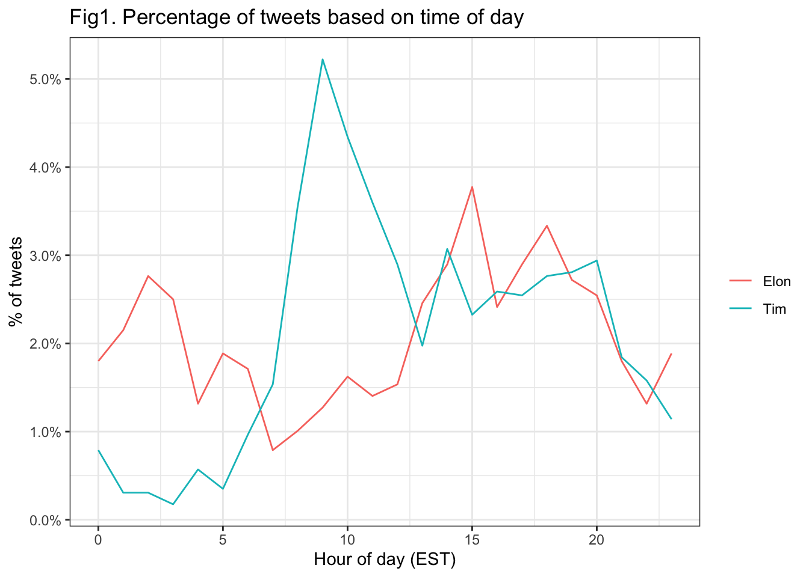
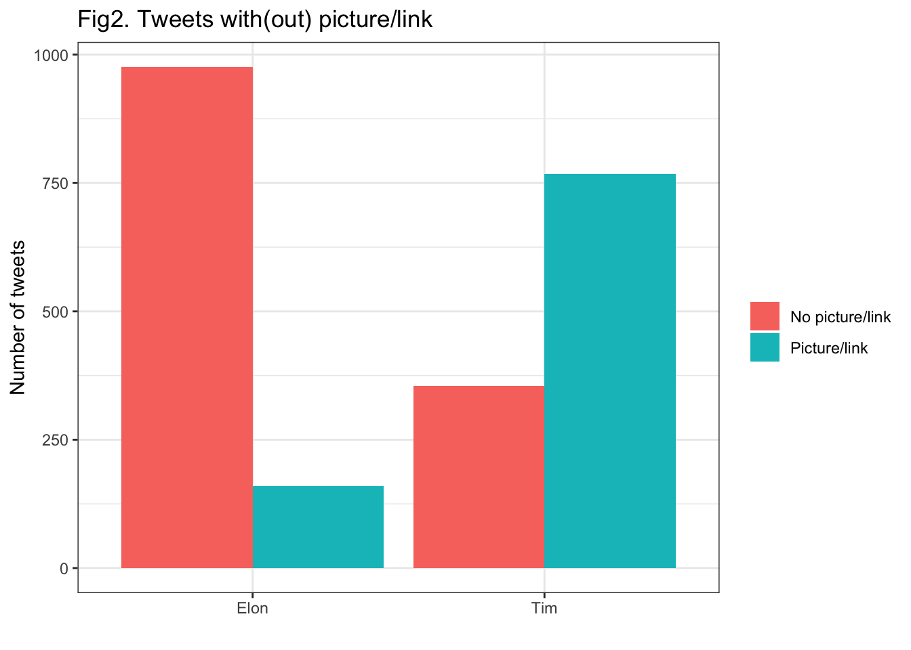
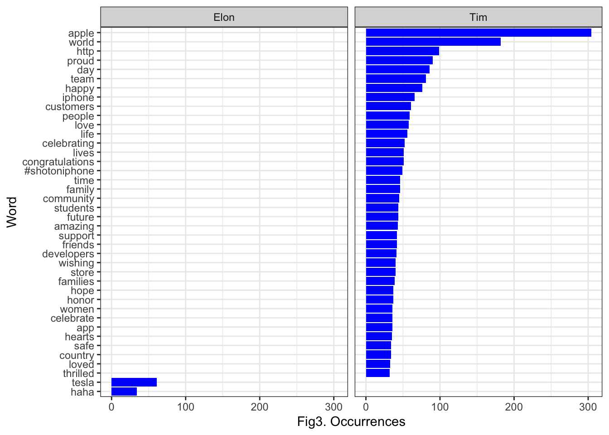
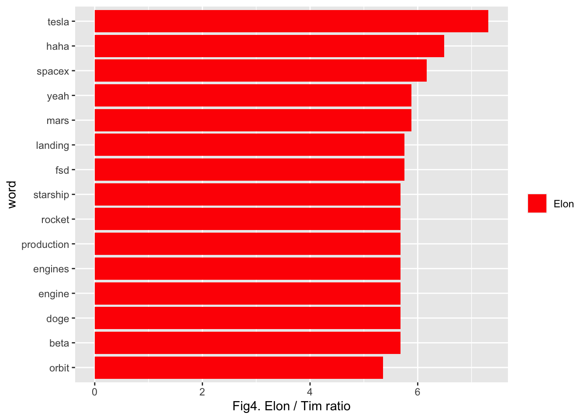
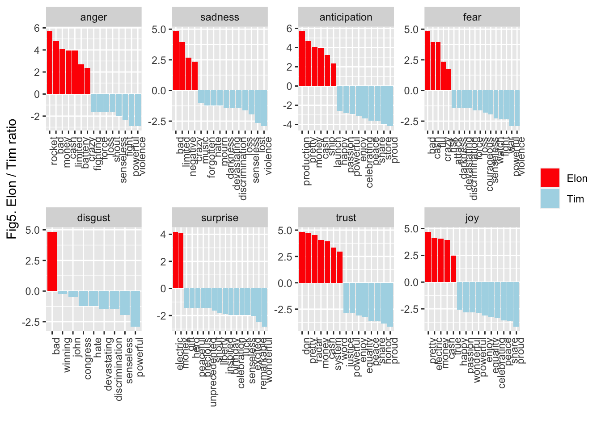
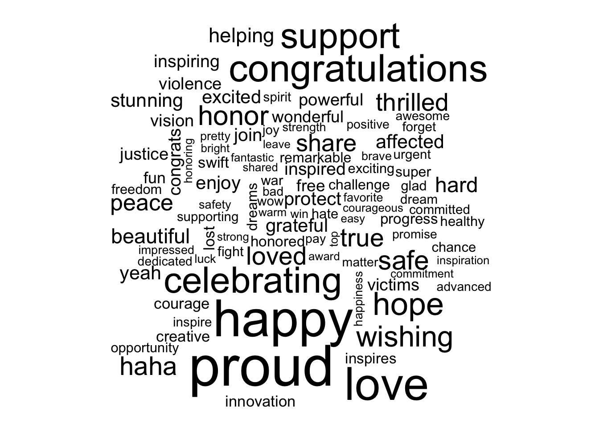
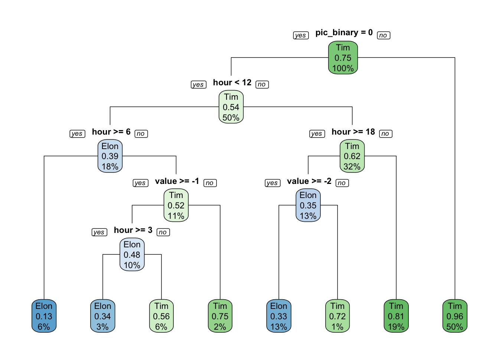

As can be seen from the figure below, Tim Cook appears to tweet more often in the morning (between 7:00am - 10:00am EST), whereas Elon is much more likely to tweet in the very early morning/late night (12:00am - 5:00am EST). Tim’s tweets reach a significant peak toward 9:00am EST, which is a sign that there are potentially scheduled tweets that go out during that time of the day.

The steady rise and peak at 9:00am observed in Tim Cook’s tweets suggest he may use an automated service, like TweetDeck, to tweet. Also, since many of his tweets are complete thoughts and sentences, rather than quick, single line comments, we can infer that he may plan his tweets/communications ahead of time.
As for Elon, his tweets tend to be less-structured with less predictable timing. His second-highest peak, roughly at 6:00pm EST, can be fully realized by a tweet sent at 6:09pm EST on 4/10, stating, “Blimps rock.” A picture of a Goodyear blimp was included in the tweet.
Please note that later in this report, in the algorithm sections, we report times using PST instead of EST.
As can be seen in Figure 2 below, we find that Tim Cook is much more likely to include a picture or a hyperlink in his tweets. Out of the total tweets in our dataset, the number of tweets with Picture/link for Elon is 159 while Tim has 768 tweets with either a picture or link.
Put otherwise, Tim Cook has a picture/link tweet rate of 68%, whereas Elon has a rate of 14%. For every one picture or link Elon tweets, Tim will tweet five.

The first thing we did was create a regex pattern that removed any unwanted symbols/characters.
Then, using a newly tokenized dataset, we show the words that occur most often in Elon’s tweets and Tim’s tweets. As can be seen in Figure 3, unsurprisingly, Elon’s most-tweeted word is Tesla, followed by haha and Tim’s most-tweeted words are Apple and world. 
To do this analysis, we joined the NRC dictionary to our data frame that contains the texts of the tweets, into a new data frame called tweet_sentiment. Then we assessed each word and calculated a logarithmic ratio comparing the users to determine the difference. We took this log ratio, and plotted it: for the words with the largest difference when it comes to being tweeted by either Elon or Tim, the top 15 are all words that come from Elon’s tweets.

Second, we begin assessing words by either positive or negative sentiment. As can be seen from Figure 5 below, it appears that Elon’s tweets have a stronger sentiment (i.e., more angry, more sad, more joyful) than Tim’s tweets. We draw this conclusion by examining the size of the red bars (Elon) in comparison to the light blue bars (Tim) for each general sentiment category.

As seen throughout the previous questions, we can assume Tim uses Twitter as a more professional means of communication, while Elon uses Twitter as a normal, non-professional user would, to tweet about blimps and claim he is the “techno-king” of his own company, Tesla. We see more instances of this dichotomy between Tim and Elon when we apply sentiment analysis to their tweets. Elon, as a whole, uses stronger sentiments (positive and negative).
What stands out the most here is Elon’s use of bad. It is his most used word among the disgust, fear, and sad sentiment categories, and the second most extreme word of the anger sentiment category. However, it is important to note that the most angered word of his is rocket, which could be used as proof against the efficacy of sentiment analysis in this case.
Tim’s use of proud also stands out. It is his most used word among the anticipation, trust, and joy sentiment categories. By comparing the sentiments under which these most commonly-tweeted words fall, we can see that Elon’s tweets are associated with more extreme sentiments as opposed to Tim’s, which are associated with more neutral sentiments.
For our predictive algorithm, we select three input variables of interest:
We’ve also included a word cloud, out of interest. Our word cloud includes the top 100 words in our combined data set (excluding ‘stop words’). As we can see, most words are of relatively similar size, suggesting that no word stands out as a being used much more than the others.

Next, we split our data into train data, tree_train, and test data for later use, tree_test. Then, we generate a decision tree, first using tree_train.
As aforementioned, we are using a decision tree to classify who the tweeter is (Elon vs. Tim) as a function of a) whether the tweet has a picture/link, b) the time of the tweet, and c) the sentiment score per the AFINN dictionary.
As can be seen from the decision tree, we very clearly observe that of 50% of the tweets that have a picture/link, that there is a 96% chance of them coming from Tim. We will continue to analyze the higher levels of the tree. We also see that for 18% of the tweets that do not contain a picture/link, but occur after 6:00am PST and before noon PST, there is a 39% chance that they come from Elon. Moreover, for 32% of the tweets that do not contain a picture/link and come at or after 6:00pm PST, that there is a 62% they are from Tim. If we continue following this branch, we also note that if the sentiment is greater than -2 per the AFINN dictionary, that there is a 33% likelihood that 13% of the tweets come from Elon.

To understand the algorithm’s effectiveness on new tweets from Elon and Tim, we use a confusion matrix on the test data. As can be seen from our confusion matrix, the algorithm has an overall accuracy of 83% with the current variables included. It shows higher predictability for Elon’s tweets versus those of Tim. But, overall, the algorithm is very well predictive of tweets from both accounts.
## Confusion Matrix and Statistics
##
## Reference
## Prediction Elon Tim
## Elon 100 77
## Tim 52 538
##
## Accuracy : 0.8318
## 95% CI : (0.8034, 0.8576)
## No Information Rate : 0.8018
## P-Value [Acc > NIR] : 0.01926
##
## Kappa : 0.5016
##
## Mcnemar's Test P-Value : 0.03459
##
## Sensitivity : 0.6579
## Specificity : 0.8748
## Pos Pred Value : 0.5650
## Neg Pred Value : 0.9119
## Prevalence : 0.1982
## Detection Rate : 0.1304
## Detection Prevalence : 0.2308
## Balanced Accuracy : 0.7663
##
## 'Positive' Class : Elon
##